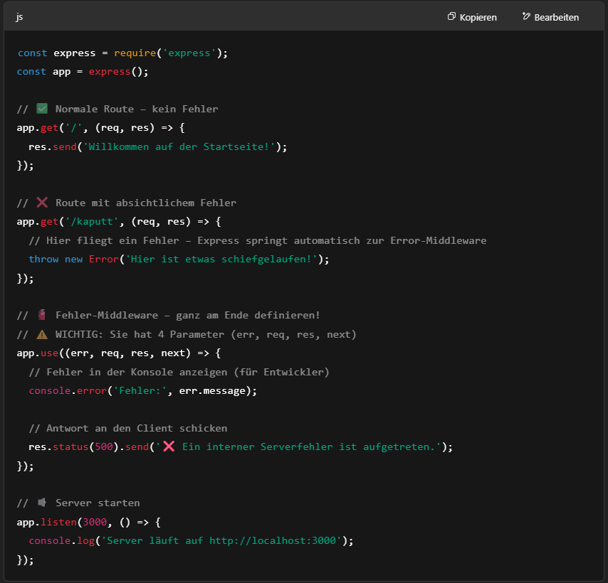

Express.js
Express.js ist ein minimalistisches und flexibles Webframework für Node.js, das dabei hilft, Webanwendungen und APIs (Schnittstellen) schnell und einfach zu erstellen. Es ist eines der beliebtesten Frameworks für JavaScript auf der Serverseite.
📦 Wozu wird Express.js verwendet?
- Erstellen von Webservern
- Erstellen von REST-APIs
- Verwalten von Routen (z. B. GET, POST, PUT, DELETE)
- Verarbeiten von Formulardaten oder JSON-Daten
- Anbindung an Datenbanken (z. B. MongoDB, MySQL)
- Middleware-Integration (z. B. Authentifizierung, Logging, Fehlerbehandlung)
Express.js in TypeScript.js installieren
Schritt-für-Schritt-Anleitung
- Projekt initialisieren
- TypeScript und Express installieren
- tsconfig.json erstellen
- Projektstruktur anlegen
- Express in TypeScript verwenden
- Datei kompilieren und Server starten


Erstellen eines Web-Servers
- Projekt-Ordner erstellen
- Express installieren
- Neue Datei anlegen
- Den Server schreiben
- Den Server starten
.env
🔒 dotenv hilft dir, geheime Informationen aus deinem Code rauszuhalten.
Routes in Express
Routes (Routen) in Express sind die Wege, die ein Benutzer im Browser aufruft, z. B. /, /about, /kontakt. in Express kannst du mit .get(), .post(), .put() usw. definieren, was passieren soll, wenn jemand diese Routen aufruft.
Statische-Dateien in Express bereitstellen
Statische Dateien sind z. B. deine:
- HTML-Seiten
- CSS-Dateien
- Bilder
- JavaScript-Dateien für die Website (nicht dein Node-Code!)


generierte HTML Dokument als Ergebnis bereitstellen


http-Anfragen behandeln
📋 Kurz zu HTTP-Methoden:
- GET = Daten anfordern (z. B. eine Webseite oder Daten aus einer Datenbank)
- POST = Neue Daten schicken (z. B. Formular absenden)
- PUT = Daten aktualisieren (z. B. bestehenden Datensatz ändern)
- DELETE = Daten löschen


Query-Parameter und URL-Parameter verarbeiten


Body des Querys lesen
-> console.log()
Middleware
Eine Middleware ist eine Funktion, die eine HTTP-Anfrage bearbeitet, bevor sie zur eigentlichen Route kommt – oder auch danach.
Sie kann:
- etwas prüfen (z. B. ob der Nutzer eingeloggt ist)
- Daten verändern
- den Request weiterleiten
- oder sogar ganz beenden (mit einer Antwort)


Error-Handling
Fehlerbehandlung (Error Handling) in Express hilft dir dabei, dass dein Server nicht abstürzt, wenn etwas schiefgeht – und dass du dem Benutzer oder Entwickler eine klare Fehlermeldung zeigen kannst.
Stell dir vor, bei einer Anfrage passiert ein Fehler. Statt dass der Server crasht, wird der Fehler an eine Error-Middleware weitergegeben.
- / Route → ganz normal: zeigt "Willkommen..."
- /kaputt Route → wirft einen Fehler → geht automatisch zur Error-Middleware
- Error-Middleware:
- zeigt den Fehler im Terminal (für dich als Entwickler)
- gibt dem Nutzer z. B. eine Fehlermeldung im Browser
Was passiert wann?
Best Practices für die Strukturierung einer Express-Anwendung


Sicherheit der Express-Anwendung gewährleisten


Datenbank integrieren